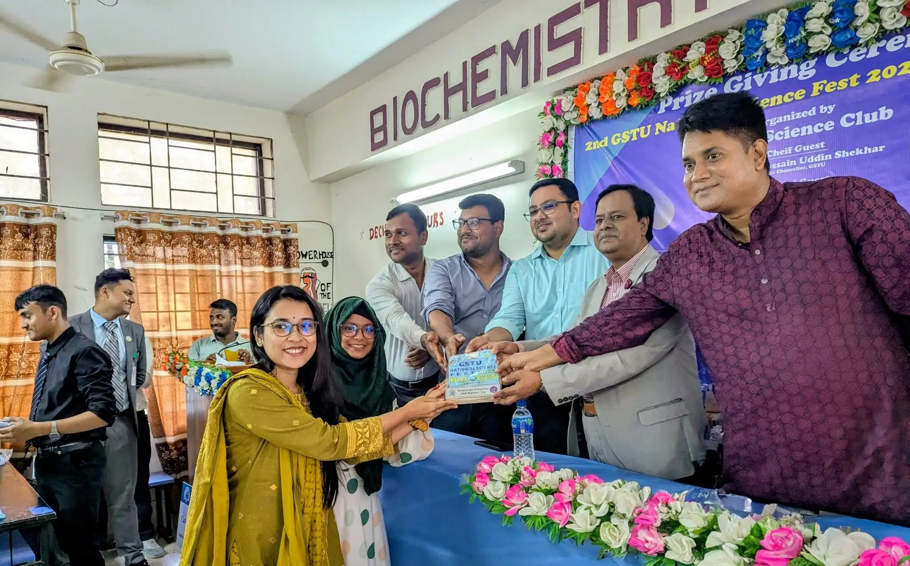

2nd GSTU National Science Fest 2025: "HALOGEN"

Children and Volunteers

Faculty and Guests

The Prize Giving Ceremony
Organizer: Gopalganj Science and Technology University (GSTU) Science Club.
Event Title: 2nd GSTU National Science Fest 2025: "HALOGEN".
Participation: Around 600 students across distinct school, college, and university segments.
Highlights: Featured diverse competitions ranging from foundational project showcasing to advanced AI challenges, highlighted by the deployment of the "Einstein Express" mobile laboratory bus to bring hands-on learning to local children.